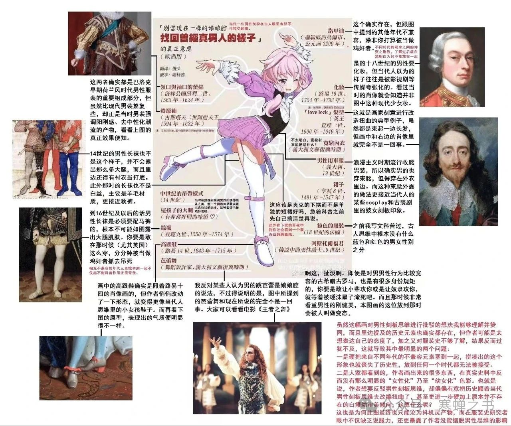
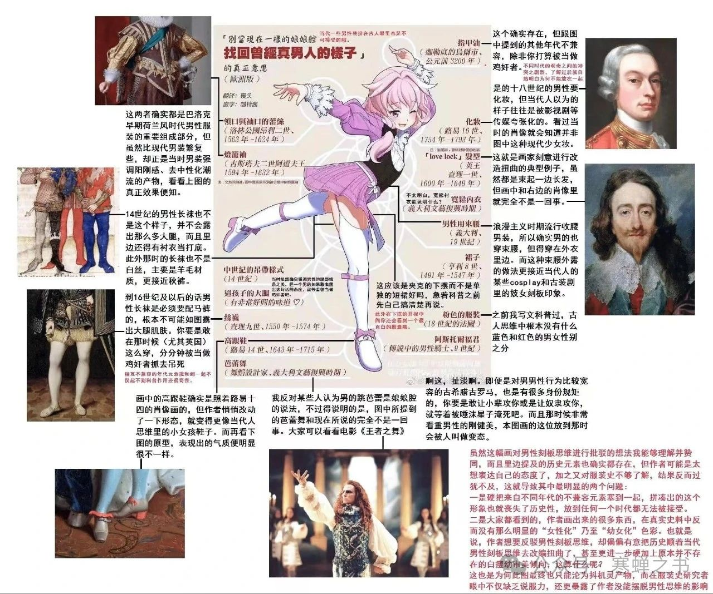

关于性别规范和文化
之所以说「现代的」性别规范是父权的或者异性恋霸权的，其实还是因为预设了扩展的启蒙人性解放论作为标准。
虽然我作为人类学爱好者也经常说，这种性别规范几乎就是偶然的，看上去有点像这里图一作者的说法。
但是其实我也完全明白，如果还是预设启蒙人性解放论，那么其他的性别规范虽然是很不同的，但是也是从另一个结构上压迫的。
如果我们把无国家社会也包括进来，那么在无阶级社会很可能也就没有「性阶级」，那可能无所谓今天意义的压迫，但是只要性别规范在那里，就仍然是不自由的。
我忘了是冈比亚还是哪里的一个族群，认为男人和女人性交会损失生命力，因此只有需要生育的时候才和女人性交。相反，从还是小孩开始（按照今天的范畴是很类似性侵儿童了），男性就开始和男人性交，这被认为能产生生命力，一直到成年也是如此。
就像图二作者说的，另一种性别规范，只是要展现另一种神话秩序而已。它没有这一种秩序里的强迫，但是必然有另一种秩序里的强迫。
宣称某文化中不存在性别压迫，如果不是因为误解或无知，就只是一种宣传技术。